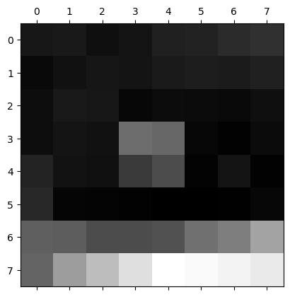

To find the homography matrix given a set of points from image 1 and image 2, I set up a system of equations based on the homography transformation equations.
Each row of the system of equations corresponds to one point correspondence between the two images.
After constructing the system of equations, I used least squares to solve for the homography matrix.
Below are the coordinates I selected to compute the homography matrix:
gibby (fixed center of projection)
gibby (rotated)
Below are the system of equations that were constructed to find the homography matrix:
Below is the homography matrix:
Part A.3: Warp the Images
dimoo (original)
dimoo (nn rectification)
dimoo (bilinear rectification)
gibby (original)
gibby (nn rectification)
gibby (bilinear rectification)
I implemented two interpolation methods for image warping: nearest neighbor and bilinear interpolation.
The first thing I did was compute the homography matrix.
I also created an output image canvas by estimating the size of my object that I am warping (rectangle for the first one and square for the second).
Then, I iterated through every pixel in the output image and applied the inverse homography matrix to get the corresponding pixel location in the input image.
For nearest neighbor interpolation, I rounded the x and y coordinates to the nearest integer values and used those to index into the input image to get the pixel value.
For bilinear interpolation, I computed the four neighboring pixel values and their distances to the original pixel location.
Then, I calculated a weighted average of those four pixel values based on their distances to get the final pixel value.
Both interpolations produce very similar results. The bilinear interpolation is slightly smoother, but the difference is negligible.
However, nearest neighbor interpolation is faster to compute since we are only indexing into the image once and not doing any extra calculations.
Part A.4: Blend the Images into a Mosaic
santorini (image 1)
santorini (image 2)
santorini mosaic
new york (image 1)
new york (image 2)
new york mosaic
london (image 1)
london (image 2)
london mosaic
To create my mosaic, I set the centered image (image 2) as the base image and warped the rotated image (image 1) onto it.
I first got 4 point correspondences from each image to compute the homography matrix.
Next, I constructed my canvas by taking the width and height of both images and creating a bounding box for the warped image.
I took the x and y coordinate offsets and the new width and height to create a canvas of zeros with 3 channels.
After, I created an alpha mask for the same size with only one channel.
I got the alpha mask by setting the pixels in the middle to be 1 and 0 on the edges and used distance_transform_edt from scipy.ndimage.
Now, I can start putting in the images to my canvas.
Since I am using the centered image as my base, I put the entire image in the canvas at the offset locations and multiplied the alpha mask with it.
I also added the alpha mask value for the centered image to the overall alpha mask of the canvas.
Now, I warp the rotated image using bilinear interpolation and put it in the canvas at the offset locations.
I also multiply the warped image with the alpha mask and add the alpha mask value for the rotated image to the overall alpha mask of the canvas.
Lastly, I normalized the canvas by dividing it by the maximum value of the alpha mask.
The alignment is not perfect because the photos were not taken from the exact same center of projection and I only use 4 point correspondences to compute the homography matrix.
This is especially noticeable in the santorini mosaic where there is some ghosting effects in certain areas and the change in lighting in the sky region causes some blending issues.
Part B.1: Harris Corner Detection
harris corners (without ANMS)
harris corners (with ANMS)
The photo on the left shows 500 detected corners using the Harris corner detection algorithm without applying ANMS.
You can see that many corners are clustered together in certain areas because the edges are more prominent and will have higher strength values.
The photo on the right shows the detected corners using the Harris corner detection algorithm with ANMS applied by only selecting the strongest corner in a certain radius until 500 corners are selected.
The corners are more evenly distributed throughout the image compared to the left image because of the radius constraint.
Part B.2: Feature Descriptor Extraction

These are 4 feature descriptors at different corners locations from the previous image.
Each patch was sampled as a 40x40 window around the corner and then downsampled to an 8x8 window.
Finally, the 8x8 window was normalized to have a mean of 0 and a standard deviation of 1.
Part B.3: Feature Matching
harris corners for image 1
harris corners for image 2
feature matching between image 1 and image 2
To match the features between two images, I first got the 250 strongest corners.
Then, I extracted the feature descriptors at those corner locations for both images.
For every feature in image 1, I compared its feature descriptor to every feature descriptor in image 2 by computing the distance between them using the L2 norm.
I found the two features with the closest distances and used them to compute the ratio.
If the ratio of the smallest distance to the second smallest distance was less than the threshold (0.8), the feature from image 1 and the closest feature from image 2 were considered a match.
You can see that there are a few matches that are incorrect but we will fix this by implementing RANSAC in the next part.
Part B.4: RANSAC for Robust Homography
santorini (image 1)
santorini (image 2)
santorini mosaic (manual)
santorini mosaic (automatic)
To have better feature matches, RANSAC was implemented to compute robust homography estimates.
In this algorithm, I randomly sampled 4 correspondences from the matched features and computed the homography matrix H.
Then, I projected all the points from image 1 to image 2 using the homography matrix and calculated the distance between the projected points and the actual points in image 2.
If the distance was less than a certain threshold (3 pixels), the correspondence was considered an inlier.
I repeated this process for a set number of iterations (10000 iterations) and returned a list of the best inliers which had the highest number of inliers.
After, I was able to use those inliers to create my mosaic instead of manually selecting the points from the image like I did in part A.
From the santorini mosaic, you can see that the images are aligned very well with minimal distortion.
If you look closely, there is still some ghosting effects in certain areas where the two images did not align perfectly because the photos were not taken from the exact same center of projection.
Additionally, there are some blending issues in the sky region where the colors do not match perfectly because the change in lighting.
However, the mosaic that uses RANSAC to compute the homography matrix looks much better than the manual mosaic because the feature matches are more accurate and there are more points to compute the homography matrix.